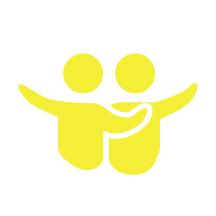

#HackUOBiblio
International open data day | 22 February 2014
Jeanette Hatherill | @JeanetteAnneJ Catherine McGoveran | @kittmcg Sarah Simpkin | @sarahsimpkin


Today's presentation
Debrief of event
ILL example start to finish
Participant projects
Upcoming events
What's next for hacking at uOBiblio
Debrief of event
 You can always find inspiration (and the best sandwiches) at La Bottega
You can always find inspiration (and the best sandwiches) at La Bottega
Pitching for a hackfest
reaching out, demystifying, building profile, making connections, starting dialogue...
Marketing & promotion
Three cheers for Dave
Pre-hack workshop
How it all went down
- 8:45 am: Caffeine and snacks
- 9:15 am: Introductions and welcome from the Library
- 9:30 am: Project ideas and proposals
- 10 am: Teams form and hacking begins
- Noon: Lunch
- 1 pm: Hacking continues
- 5 pm: Present project progress and closing remarks
- 5:30 pm: Head to #OpenDataDay pub event
Feedback & lessons learned
“Was a great opportunity to try new things and to collaborate with more experienced hackers. I'll definitely be less hesitant to explore open data projects and development projects of my own.”
- #HackUOBiblio participant
“J'ai aimé le contact personnel et les ressources disponibles, ainsi que la liberté en terme d'apprentissage. Les personnes étaient très accueillantes et la communication était efficace. Hackfest était très professionnel et organisé. Le local et l'atmosphère étaient idéals. J'ai apprécié le fait qu'il y avait des gens pour aider. ”
- #HackUOBiblio participant
More examples at the beginning of the session for beginners. It's one thing to read about stuff ahead of time, but it would be nice to actually discuss a few examples and how they were done.
Optional beginner group with a few learning exercises.
More interactive workshop, maybe with a how to hack 101
- #HackUOBiblio participants
Lessons learned
More coffee
Better plan for storing / sharing projects
Hands-on sessions before and during
More communication with student groups